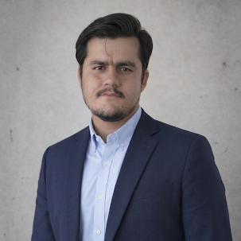

November 2026
Personal website launched
My academic portfolio is now online, with my research, experience and events in one place.
UpdatePharm-D student, computational drug discovery
I study at FUUAST in Karachi and work on in silico methods that help find new medicines. My current project looks at a tuberculosis drug target called DprE1. I am preparing for international graduate study in Europe.
Download CV LinkedIn
November 2026
My academic portfolio is now online, with my research, experience and events in one place.
UpdateIn progress
My in silico project uses molecular docking and ADMET evaluation to study candidate compounds against DprE1.
Research30 August 2025
I finished a six-week internship at Alkhidmat Foundation Karachi, focused on community service and management.
ExperienceI am a Pharm-D student at the Federal Urdu University of Arts, Science and Technology (FUUAST) in Karachi, expected to graduate in December 2028. My main interest is how potential medicines meet disease targets, which I study with docking, ADMET prediction and virtual screening.
Alongside my degree, I build practical experience through internships, in silico research, and volunteer work such as breast cancer awareness programs and public speaking.
I am looking for international graduate opportunities, including Erasmus Mundus Joint Master’s programmes and scholarships in Europe.
This continuing project focuses on DprE1 (decaprenylphosphoryl-β-D-ribose 2′-epimerase), an enzyme essential for building the cell wall of Mycobacterium tuberculosis and an established target for new anti-TB agents.
I use molecular docking to study how candidate compounds bind to DprE1, followed by ADMET and drug-likeness evaluation to assess their pharmacokinetic and safety profiles.
FUUAST, Karachi. A five-year degree covering pharmacology, pharmaceutics, analytical chemistry, microbiology, biochemistry and dispensing pharmacy. Expected graduation: December 2028.
I have taken part in health awareness programs, including breast cancer awareness.
I have taken part in public speaking activities and attended a two-day public speaking seminar at FUUAST.
I am active in volunteer work and professional development activities, with a commitment to community health.
I am happy to hear from supervisors, programme coordinators and researchers.